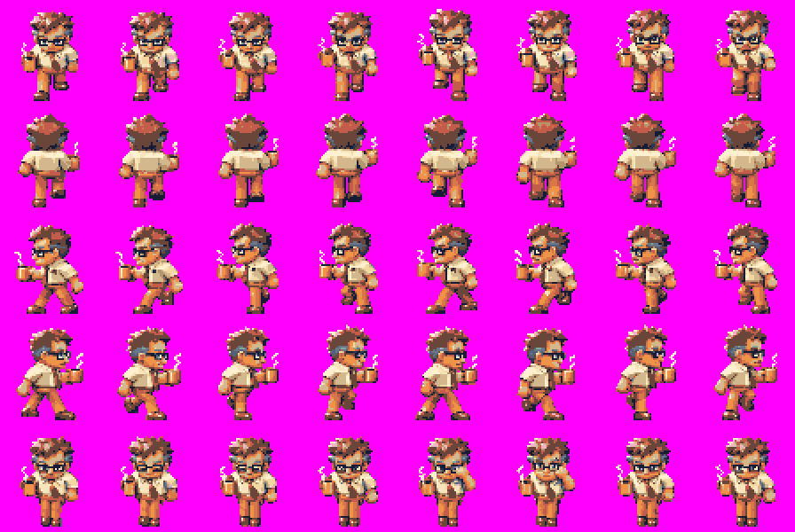
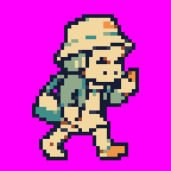
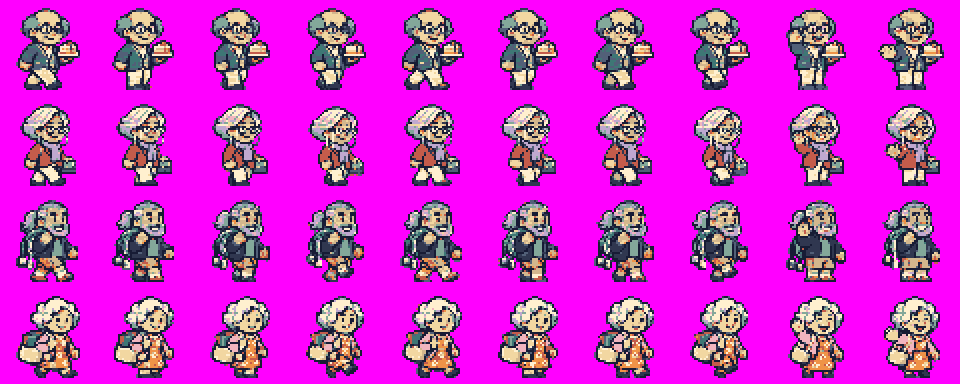
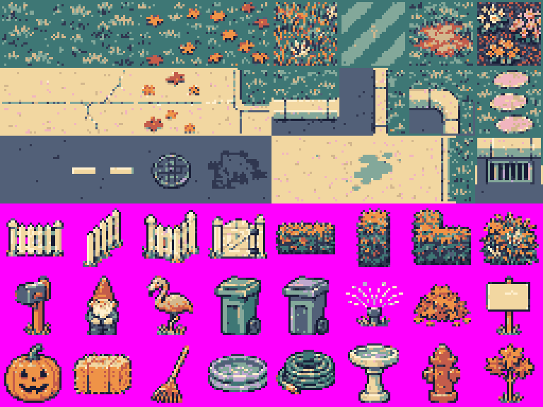
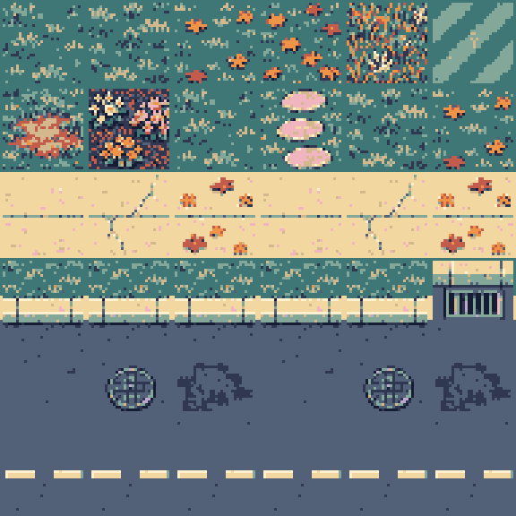

Local review only. Exact magenta backgrounds are intentional. No game integration or version bump.
448 × 300, 56 × 60 cells. Walk down / up / left / right / idle. Approximately 75 ms.

Eight right-facing 48 × 48 frames, 100 ms.

New Boss / Holiday Party / Reorg. Three 144 × 152 cells. Party hat is folded sideways rather than completely flattened.
480 × 192. Walk frames 0–7, wave frames 8–9. 110 ms.

48 native 32 × 32 cells, ground first three rows. Props have two-pixel margins. Terrain variants match within grass, paving and asphalt families; curbs and corners are directional.

